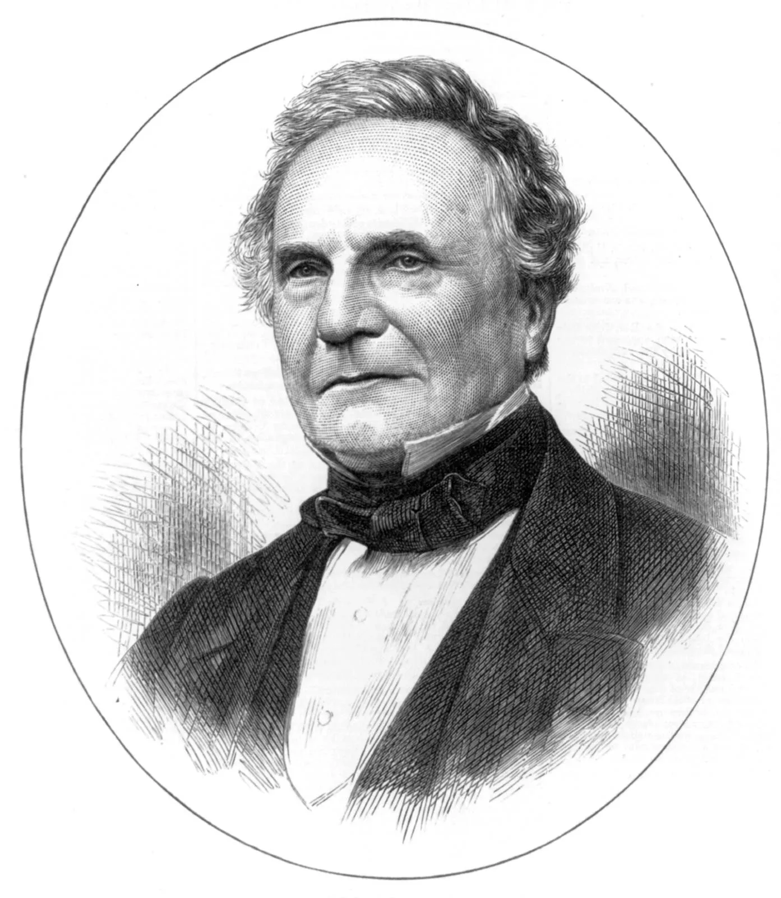

Charles Babbage
Charles Babbage, an eminent 19th-century mathematician, inventor, and visionary, profoundly shaped the landscape of modern computing. Born in 1791 in London, Babbage's relentless curiosity and innovative mind pioneered the concept of the computer.
His most renowned invention, the "Difference Engine," aimed to automate mathematical calculations, revolutionizing computation. This machine, though never brought to life throughout his lifetime, laid the groundwork for modern computers, employing principles of algorithms and mechanical computation.
Babbage's vision expanded with the concept of the "Analytical Engine," an advanced device capable of executing diverse tasks, storing data, and performing calculations based on punched cards. Astonishingly ahead of his time, this theoretical design encompassed fundamental components of modern computers, like the central processing unit (CPU) and memory.
His contributions transcended tangible inventions; he advocated for systematic methods in scientific computation, underscoring the importance of accuracy and rigor in calculations. Babbage's legacy endures not only through his inventions but also through his pioneering ideas, which continue to shape the ever-evolving landscape of technology and computation. His visionary concepts laid the cornerstone for the digital era, earning him the title of the "father of the computer."
Three quick facts about Charles Babbage
- Designs for Analytical Engine: Charles Babbage is often referred to as the "father of the computer" for his groundbreaking work on the Analytical Engine.
- Collaboration with Ada Lovelace: Babbage collaborated with Ada Lovelace, a mathematician and writer, who is credited with creating the first algorithm intended for implementation on a machine.
- Passion for Precision and Accuracy: Babbage was known for his dedication to precision and accuracy in his work. His dissatisfaction with the inaccuracies in mathematical tables of the time motivated him to create mechanical devices that would eliminate human error in calculations.
Alan Turing

Alan Turing, a pioneer in computer science and a pivotal figure in World War II, remains an emblem of intellectual brilliance and profound tragedy. Born on June 23, 1912, in London, Turing's extraordinary mind was evident from an early age. His academic prowess and unique way of thinking set the stage for a career that would shape the course of modern computing. Turing's legacy is most prominently associated with his work on breaking the Enigma code during World War II.
His pivotal role in deciphering encrypted German messages through the development of the Bombe machine significantly shortened the war, saving countless lives. Turing�s efforts at Bletchley Park, where he worked alongside other codebreakers, showcased his unparalleled intellect and innovation. His theoretical and practical contributions to cryptanalysis provided a turning point in the Allies� success.
Turing's accomplishments had such an impact on the allied countries succes in the second world war that his achievements have had many novels and films showcasing his success, intelligence and the groundwork he set for the future of computer science. Most notably of these pieces of media is the award winning film "The Immitation Game" staring Benedict Cumberbatch.
Three key points on Alan Turing
- Pioneer in Computer Science: Alan Turing is often regarded as the father of computer science and artificial intelligence. His concept of the Turing Machine, a theoretical device that manipulates symbols on a strip of tape according to a table of rules, laid the groundwork for modern computing and algorithms.
- Codebreaker during World War II: Turing played a pivotal role in cracking the German Enigma code during World War II at Britain's code-breaking center, Bletchley Park. His work on the Enigma machine, along with his team, significantly shortened the war and saved countless lives by intercepting and deciphering German messages, providing crucial intelligence to the Allies.
- Tragic Personal Story: Despite his immense contributions to science and technology, Turing faced tragic circumstances in his personal life. He was persecuted by the British government for his homosexuality, which was then considered illegal. Turing was subjected to chemical castration as an alternative to imprisonment, and he tragically died at a young age. Link to biography of Alan Turing written by Nigel Cawthorne
The Altair 8800

The Altair 8800, launched in 1975, stands as a pivotal milestone in the history of personal computing, widely regarded as the first commercially successful personal computer. Created by Micro Instrumentation and Telemetry Systems (MITS), it emerged during the nascent stages of the computer revolution.
Named after the star Altair in the constellation Aquila, the Altair 8800 was initially designed as a build-it-yourself computer kit. Hobbyists and electronics enthusiasts were its primary target audience. The kit came with a minimalist design featuring an Intel 8080 microprocessor, a front panel adorned with switches and LEDs, and a massive potential for customization.
The defining moment for the Altair occurred when it graced the cover of the January 1975 issue of Popular Electronics magazine. This feature showcased its potential and triggered an overwhelming response. The cover story prompted an influx of orders, driving substantial interest and demand for the Altair.
The machine, however, was not without its challenges. Programming the Altair 8800 was a laborious task initially, as users had to input machine code through the front panel switches manually. This difficulty led to the birth of an unexpected phenomenon: the founding of Microsoft. Bill Gates and Paul Allen developed a version of the BASIC programming language tailored for the Altair, which significantly eased programming complexities and garnered attention in the computing community.
The success of the Altair inspired the formation of the Homebrew Computer Club, a gathering place for early computer enthusiasts and future industry luminaries like Steve Wozniak and Steve Jobs, who would go on to found Apple Computer.
Despite its significance, the Altair 8800 had limitations. It lacked a monitor, keyboard, or storage drives, requiring users to interface with it through the front panel switches or add peripherals themselves. Nevertheless, its impact on the burgeoning personal computing industry was undeniable, serving as a catalyst for innovation and igniting the imagination of countless individuals eager to explore the realm of computing.
The Altair's influence extended beyond its technical specifications. Its legacy lay in its role as a harbinger of the personal computing era. It propelled the concept of computers as accessible tools for individuals rather than exclusive machines for corporations or research institutions. Its success set the stage for subsequent developments in the field, paving the way for the birth of more user-friendly and commercially viable personal computers.
Ultimately, the Altair 8800 marked a pivotal moment in the history of computing, igniting a revolution that would transform the world. Its legacy lives on as a symbol of innovation, sparking the imagination of pioneers and enthusiasts alike, and laying the groundwork for the digital landscape we navigate today.